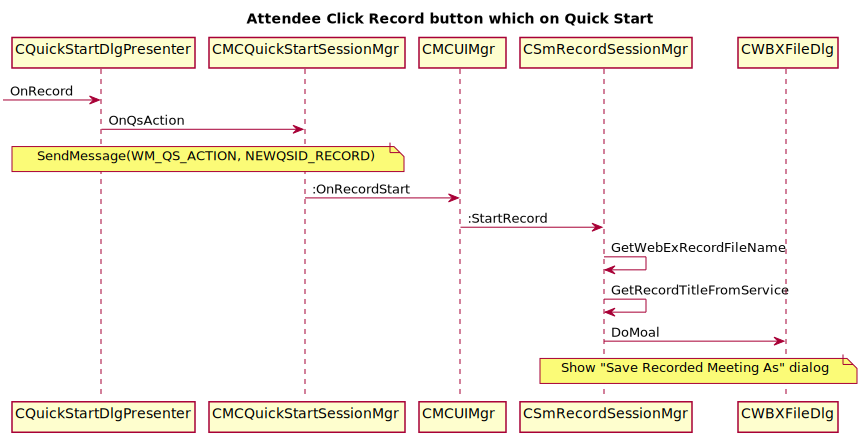

Record Privilege And Relevant UI¶
This document will show you:
- How the presenter ‘assign’ or ‘withdraw’ record privilege
- How the attendee’s UI behaviour will be changed when had assigned record privilege
- How the attendee’s UI behaviour will be changed when had withdrawer record privilege.
Presenter ‘assign’ or ‘withdraw’ record privilege¶
- Step1: Click ‘Menu=>Participant=>Assign Privilege ...’
- Step2: Show ‘Participant privilege’ dialog
- Step3: In ‘Participant privilege’ dialog, Click ‘Participants’ tab
- Step4: In ‘Participant’ tab, Check or UnCheck ‘Record a meeting’ check box
- Step5: Then click Assign button
Here is the sequence:

Show “Save Recored Meeting As” dialog¶
- Step1: Presenter assign the ‘Record Privilege’ to attendee
- Step2: Attendee click ‘Record’ button from ‘Quick Start’
- Step3: Show ‘Save Recored Meeting As’ dialog
Here is the sequence show the call flow when the Attendee click ‘Record’ from ‘Quick Start’ :
Attendee receive a “withdraw record privilege” message¶
There are three case:
- Case1: Attendee without click Record from Quick Start
- Case2: Attendee clicked Record from Quick Start, and showed ‘Save Recored Meeting As’ dialog
- Case3: Attendee had Recored the meeting
When presenter withdraw the attendee’s privilege, here is the sequence at the attendee side